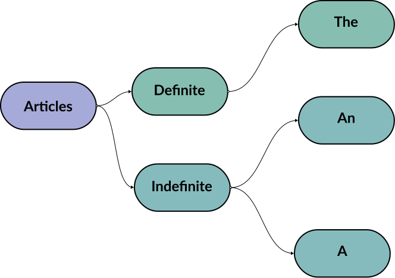

What is OOP ?
An Introduction
Object Oriented programming is a programming paradigm that relies on the
concept of classes and objects.
It is used to structure a software program into simple, reusable pieces of
code blueprints (usually called classes), which are used to create
individual instances of that chosen blueprint.
A class is an abstract blueprint used to create more specific, concrete
objects. Classes often represent broad categories that share attributes.
These classes define what attributes an instance of this type will have,
but not the values of those attributes for a specific object.
Classes can also contain functions, called methods,
available only to objects of that type. These functions are defined within
the class and perform some action helpful to that specific type of object.
Class templates are used as a blueprint to create individual objects.
These represent specific examples of the abstract class. Each object can
have unique values to the properties defined in the class.
OOP - in application
Grouping related information together to form a class structure makes the
code shorter and easier to maintain.
- Create a parent class for the main category.
- Create child classes for the different sub categories.
- Add unique attributes and behaviors.
-
Create objects from the child classes to represent the concrete ideas.
Building Blocks of OOP
The fundamental building blocks are
-
Classes.
-
Classes are essentially user defined data types. Classes are where
we create a blueprint for the structure of methods and attributes.
Individual objects are instantiated or created from this blueprint.
-
Classes contain fields for attributes and methods for behaviors.
-
Objects.
-
An object can be a variable, a data structure, a function, or a
method and as such is a value in memory referenced by an identifier.
- Objects can correspond to things to in the real world.
- Objects are instances of classes created with specific data.
- Objects have states and behaviors.
-
An object stores its state in fields and exposes its behaviors
through methods.
-
Methods.
-
Methods represent behaviors, they also perform actions. The
method's code is defined in the class definition.
-
Methods operate on an object's internal state and serve as a
primary mechanism for object to object communication.
-
Attributes.
-
Attributes are the stored information, and they are defined in teh
class template. When objects are instantiated these individual
objects have unique data stored in the attribute field.
-
The state of the object is defined in the object's attribute
fields.
The Four Principles of OOP
The four pillars of object oriented programming are
-
Inheritance.
-
Inheritance allows classes to inherit features from other classes.
-
Parent classes extend attributes and behaviors to child classes.
-
Basic attributes are defined in a parent class and child classes
are created to extend the functionality of the parent class and
also adding additional attributes and behaviors.
-
The benefits are, a program can have a generic parent class and a
then more specific child class. This simplifies the process,
instead of recreating the structure multiple times, child classes
gain access to the functionalities within their parent class.
-
In js inheritance is also known as prototyping. A prototype object
acts as a template for another object to inherit the properties
and behaviors from. There can be multiple prototype object
templates,creating a prototype chain.
-
Encapsulation.
-
Encapsulation means containing all the information inside an object,
and only exposing what is deemed necessary. When an object is
instantiated from the class, the data and methods are encapsulated
in that object.
-
Abstraction.
-
Abstraction means that the user can only interact with selected
attributes and methods of an object, it uses simplified high level
tools to access a complex object.
- Using simple things to represent complexity.
- Hiding complex details from the user.
-
Polymorphism.
-
More on Objects and Classes
-
A field (also called data member or member variable) is a particular
piece of data encapsulated within a class or object. In the case of a
regular field (also called instance variable), for each instance of the
object there is an instance variable.
-
Fields are abstracted by properties, which allow them to be read and
written as if they were fields, but these can be translated to getter
and setter method calls.
-
A feature of objects is that an object's own procedures can access
and often modify the data fields of itself (objects have a notion of
this or self). In OOP, computer programs are designed by making them out
of objects that interact with one another.
-
Class-based OOP languages have objects that are instances of classes,
which also determines their types.
-
Objects in js generally start out as non-specific groups of
data and functionality.
-
Class variables
- belong to the class as whole and there is only one of each.
-
Instance variables
-
data that belongs to individual classes and every object has a copy.
-
Member variables
-
refers to both the class and instance variables that are defined by
the class.
-
Class Methods
-
belong to the class as a whole and have access access only to class
variables and inputs from procedure calls.
-
Instance Methods
-
these belong the individual objects and have access to instance
variables for the specific object they are called on.
